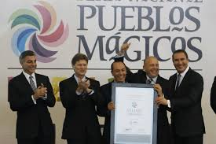

Historia de que Atlixco es considerado Pueblo Mágico.
El funcionario afirmo que el estado tiene una identidad turística muy propia: “es una ciudad que recibió el año pasado cerca de 12 millones de visitantes y alrededor de 3 millones de pernoctas, lo cual habla de una evolución impresionante en el sector turístico. En tanto, José Luis Galeazzi Berra, alcalde de Atlixco se dijo contento por este reconocimiento: “Es un orgullo ser atlixquense, es un orgullo hoy recibir este nombramiento. Atlixco siempre ha sido mágico, pero tenemos que darle mucho más. Atlixco tiene que ser uno de los mejores destinos turísticos de Puebla y de México. Con esto, Puebla cuenta actualmente ya con 9 “Pueblos Mágicos”: Chignauapan, Cuetzalan, Pahuatlán, Cholula, Tlatlauquitepec, Xicotepec de Juárez, Zacatlán, Atlixco y Huauchinango.
Historia de Atlixco.
Historia de Atlixco.
Hacia el año 1100 d.C. el valle de Atlixco se hallaba ocupado por pobladores de origen Teochichimeca, Chichimeca y Xicalancas que bajo el dominio de la gran Tenochtitlan, se asentaron primeramente al poniente del cerro de San Miguel, hoy Solares Grandes. Estos primeros pueblos fundaron así Quauhquechollan (Águila que huye) y que tiempo después llamaron Acapetlahuacan, "Lugar de división del señorío". Su posición geográfica hizo que fuera escenario de luchas entre los diversos grupos indígenas que estaban asentados en los alrededores. Los pueblos de Calpan, Huejotzingo y Cholula se disputaron en diversas épocas la posesión del valle, que con la llegada de los españoles se encontraba bajo el dominio de Huejotzingo.
La nueva población que fundaron fue también llamada Quauhquechollan, la actual Huaquechula a donde emigraron los Calpan y los Huejotzincas.Al crecer la comunidad española, se realizaron las gestiones necesarias ante la Corona para que se les autorizara la fundación de la Villa de Carrión. Don Pedro del Castillo Maldonado y Cristóbal Ruiz Cabrera fundaron la Villa de Carrión, hoy Atlixco, pasando a ser los primeros Alcaldes Ordinarios como consta en la Primera Acta de Cabildo del 22 de septiembre de 1579. En 1632, la cabecera fue designada independiente de Huejotzingo con 11 poblaciones a su cargo, y el 13 de marzo de 1706 se convirtió en una especie de señorío.Fue concedido por Felipe II en su Real cédula, expedida en Barcelona el 29 de septiembre de 1579. El Escudo se halla entre un pabellón de grana con galón de oro, con el cual tiene por cimera una corona con una águila explayada. En su bordadura se halla un cheurrón y uñas cotizas por las que asoma un león naciente y una faja de oro que toca la barba de un escúdete con dos leoncillos en salto y otro rampante y dos columnas verticales. En la partición siniestra del escudo figura el Arcángel San Miguel con flamígera espada por ser el Patrono de la Ciudad de Puebla, de donde salieron los fundadores Villa de Carreón en el Valle de Atlixco; en la parte media del cuartel diestro hay otra águila en color sable y abajo dos barras con un tercer recubierto de oro.
La fertilidad del Valle hizo que la Villa de Carrión pronto fuera una importante zona agrícola, convirtiéndose ya para principios de siglo XVII en el primer granero de la Nueva España lo que llamó la atención de órdenes religiosas como la de los franciscanos, agustinos, carmelitas, mercedarios, juaninos y la de las monjas clarisas, que llegaron hasta el valle para edificar sus conventos. Atlixco ascendería a la categoría de ciudad el 14 de febrero de 1843 cuando por decreto del entonces presidente general Nicolás Bravo le reconoció su participación en el proceso de Independencia y la declaró ciudad con el nombre de Atlixco. El 19 de octubre de 1847 defiende la soberanía nacional de la invasión estadounidense por medio del batallón Libres de Atlixco quienes vencieron a los estadounidenses. Años más tarde el 4 de mayo de 1862 un día antes de la Batalla de Puebla los atlixquenses repelieron el ataque de las tropas conservadoras de Leonardo Márquez obligándolo a retirarse y de esta forma se evitó que sus tropas llegaran a reforzar a los franceses en Puebla siendo este un factor importante para alcanzar la victoria al día siguiente, este hecho histórico se conoce como la Batalla de Atlixco.
El Cerro de San Miguel.
El Cerro de San Miguel.
El Cerro de San Miguel también conocido como Popocatica (cerro que humea) o Macuilxochitpec (cerro de las cinco flores), es el lugar en donde se realiza la fiesta máxima de Atlixco que se lleva a cabo el último domingo de septiembre y para la que se reúnen los representantes de las once regiones culturales de Puebla. Pero aunque tu visita no coincida con la fecha, el lugar te ofrece una maravillosa vista panorámica y siempre puedes visitar la Capilla de San Miguel. El origen de esta capilla como espacio consagrado a la devoción de San Miguel Arcángel, se remonta al siglo XVI. Como se ve el emplazamiento, inició con una ermita dependiente del convento, que evolucionó y se ha conservado a través de los años; al principio su uso fue esporádico, pues al parecer la congregación solo hacia ceremonias en el día de fiesta. Su ubicación es en el cerro de San Miguel. Cada 29 de septiembre la Capilla de San Miguel recibe a cientos de fieles que acuden en romería con motivo de la fiesta del Arcángel San Miguel. Esta celebración en ocasiones coincide con la festividad del Huey Atlixcayotl que se realiza el último domingo de septiembre lo que hace más grande la fiesta, aunque son dos celebraciones totalmente distintas. San Miguel, que cuenta la historia, encerró al diablito que hacía de las suyas en los solares dentro del pozo que se encuentra ahí. Al descender de la cima puedes visitar el Ex Convento Franciscano y disfruta de esta Iglesia tipo fuerte, única en el Estado; además de su bello retablo restaurado por la Asociación “Adopte Una Obra de Arte” y podrás admirar la hermosa vista del poniente de la ciudad desde su atrio. Muchas parejas escogen esta bella Iglesia para su boda
Datos del Elaborador de la Aplicación.
Escuela: CBTIS NO. 16.
Materia: Desarrolla Aplicaciones Móviles.
Nombre del Profesor:Jose Antonio Gómez.
Nombre del Elaborador de la Aplicación:Miguel Angel Cardona Rosas.
Semestre y Grupo:4G
Ciclo Escolar:Febrero-Junio 2016..
El turismo en Atlixco.
Miguel Angel Cardona Rosas
¿Qué es el turismo?
El turismo
Puede definirse al turismo como el conjunto de las acciones que una persona lleva a cabo mientras viaja y pernocta en un sitio diferente al de su residencia habitual, por un periodo consecutivo que resulta inferior a un año.el turismo es una de las industrias más importantes a nivel mundial y promueve viajes de todo tipo: con fines de descanso, motivos culturales, interés social, negocios o simplemente ocio. Pese a que la actividad turística proviene de tiempos ancestrales, recién se definió hace unos años como actividad económica independiente y dado que engloba a una gran variedad de sectores económicos y disciplinas académicas, encontrar una definición absoluta del término es un tanto difícil. Puede verse de una u otra forma de acuerdo al aspecto o la actividad desde la que se lo desee definir.
En el sector económico podrían definir el turismo a partir del consumo, mientras que un psicólogo realizaría un análisis partiendo de los comportamientos turísticos. Por su parte, un geógrafo ofrecería una definición cuyo principal elemento sería el territorio, sus propiedades y demás cuestiones que toquen su área de trabajo.
Características del turismo.
Desde el punto de vista más técnico, el término turismo sirve para catalogar a todas aquellas actividades que suele realizar toda persona durante sus viajes, esto sin importar cual es la razón principal de su viaje, pero eso sí, sacándolo de lo que se podría catalogar como su ambiente natural de vida. Todo este significado mencionado corresponde a lo dicho por parte de la Organización Mundial del Turismo (OMT) de las Naciones Unidas, quienes se encargaron de buscar un significado exacto para el término turismo. Pero aparte de esto, el turismo también llega a presentar otras características interesantes, por ejemplo, debido al interés por parte de toda clase de personas, el turismo se ha ramificado en varios sub-estilos de práctica, dándonos múltiples alternativas a conocer, así encontramos por ejemplo al turismo de aventura, el gastronómico, rural, cultural, vacacional, entre varios otros, todo es cuestión de ver a cual uno se acomoda más. Aparte vale decir que con esta clase de divisiones turísticas son muchas las naciones que se ven favorecidas ya que pueden explotar algunas características principalmente en lugar de otras que no manejan a la perfección; tomemos el caso de Egipto, una nación que aprovecha fundamentalmente su historia y legado cultural para atraer cada año millones de visitantes a sus tierras.
Tipos de turismo
Turismo de Compras. El turismo de compras se caracteriza por estar organizado con el fin de recorrer los centros comerciales y espacios donde el viajero puede consumir comprandoes ya una de las motivaciones principales de millones de personas a la hora de elegir un destino para sus vacaciones. Se convierte así en uno de los principales impulsores de la transformación de las estrategias de promoción de los destinos en todo el mundo, Esta modalidad de ocio se está convirtiendo en una de las herramientas más utilizadas en la promoción de los destinos. De hecho, el turismo de compras "es un componente muy importante en el momento en que los turistas eligen y preparan un viaje".
Turismo Cultural. El turismo cultural se encuentra centrado en visitas a museos, exposiciones, y demás lugares propios del lugar donde el viajero puede conocer más sobre la historia y la vida cultural del sitio que visita. s una modalidad de turismo que resalta los aspectos culturales que oferta un determinado destino turístico, ya sea un pequeño pueblo, una ciudad, una región o un país. En los últimos años ha cobrado cierta relevancia en aquellas zonas que han visto limitados otros tipos de turismo: sol y playa, deportivo, etc. Este tipo de turismo precisa de recursos histórico-artísticos para su desarrollo. Es más exigente y menos estacional. El turismo cultural está considerado parte del grupo de turismo alternativo. El turismo cultural es cuando los turistas se concentran en la cultura de los lugares adonde van, por ejemplo: ver museos o ver cosas construidas muchos años antes, como las pirámides.
Turismo Rural. El término turismo rural se refiere a cualquier actividad turística que se encuentre en un medio rural, cerca de áreas naturales, litorales y que permiten actividades relacionadas con el trabajo del sector rural. Es un tipo de turismo opuesto al masificado, el que se estila en las ciudades costeras, y exige un entorno endógeno soportado por un entorno humano y ambiental. Es un turismo respetuoso con el medio ambiente, que intenta unirse al resto de las actividades turísticas aprovechando los recursos locales.
Estadísticas sobre el turismo internacional.
De acuerdo con las estadísticas de la Organización Mundial del Turismo (OMT), en 2008 las llegadas de turistas internacionales ascendieron a 917 millones visitantes, lo que representó un aumento de 1,76% con respecto a 2007. En 2009 los arribos de turistas internacionales cayeron a 882 millones, representando una disminución a nivel mundial del 4,4% con respecto a 2008. La región más afectada fue Europa con una caída del 5,6%, sin embargo Francia continua siendo el país más visitado del mundo. La disminución en el flujo de turistas internacional obedeció principalmente a los efectos de la recesión económica de 2008-2009, cuyos efectos se comenzaron a sentir en el turismo desde junio de 2008,5 y que se agravó todavía más en algunas regiones debido al brote de la gripe A (H1N1) de 2009. En 2010 el número de llegadas de turistas se recuperó y subió para 940 millones, superando el récord que se había alcanzado en 2008. En 2012 el número de llegadas alcanzó el récor de 1.035 millones de visitantes internacionales, superando los 983 millones de turistas internacionales de 2011.
El turismo en Atlixco.
Miguel Angel Cardona Rosas.
El turismo de Atlixco
Atlixco es un municipio ubicada en el Estado de Puebla. Es un gran lugar turístico por su su buen clima y la gran actividad florística, comercial y sus festivales culturales, por ejemplo el Atlixcáyotl. A continuación se presenta su ubicación y lo increíble y atractivo que es Atlixco:
Ubicación de Atlixco Puebla
El municipio de Atlixco se localiza en la parte centro Oeste del estado de Puebla. Tiene una altitud promedio de 1840m sobre el nivel del mar. Sus coordenadas geográficas son los paralelos 18º 49` 30" y 18º 58` 30" de latitud norte y los meridianos 98º 18` 24" y 98º 33` 36" de longitud occidental.Se ubica a 25 km de la ciudad de Puebla, capital del Estado y cuenta con dos importantes vías de acceso: la Carretera Federal 190 y la moderna Autopista Vía Atlixcáyotl. Actualmente, es una moderna ciudad con más de cien mil habitantes, que ha logrado armonizar su desarrollo urbano con el majestuoso legado de arquitectura colonial que dejaron sus fundadores (1579), y que hoy es uno de los principales atractivos turísticos de este municipio.
Atlixco es un gran lugar para pasar y divertirse bien, sobre todo para los turistas. ya que nos ofrece un buen clima y muchas atracciones culturales. A continuación se presenta algunas de ellas:
El Clima.
El municipio está situado en la parte centro del estado de Puebla en un hermoso valle, goza de un clima privilegiado por lo que el lema de la ciudad es "el mejor clima del mundo". En el territorio del municipio se presenta la transición entre los climas templados del norte del estado y los cálidos del sur; presenta dos variantes de clima: templado y cálido. Clima templado subhúmedo con lluvias en verano. Este clima es característico de las áreas montañosas del Noroeste, es decir de las estribaciones de la Sierra Nevada. Clima semicálido subhúmedo con lluvias en verano. Este clima se localiza al centro y sur ocupando la mayor parte del municipio. Clima templado subhúmedo con lluvias en verano. Se localiza al sureste y extremo noroeste, en las zonas montañosas.
Artesanías.
Dentro de las artesanías destacan los utensilios de barro natural y de barro policromado, camisas bordadas y velas. En Atlixco, camino a Tochimilco, están los viveros de la Colonia Cabrera, en los que se producen plantas y flores de todo tipo. En el municipio de Axocopan hay unos manantiales de agua fría mineral carbonatada y es un lugar rústico que cuenta con alberca de aguas medicinales.
Arquitectónicos Religiosos.
Dentro de la arquitectura religiosa destacan la Iglesia de la Merced (3 Norte 404), con su fachada barroca de argamasa; la Iglesia de San Agustín (Av. Independencia y 3 Poniente), es de estilo barroco con ornamentaciones en argamasa se construyó entre 1589 y 1698. La orden de los agustinos fue la segunda en llegar a Atlixco y la fundación de su convento se hizo en la última década del siglo XVI, bajo la encomienda de Fray Melchor de Vargas; la misión de los agustinos no fue la de evangelizar indios, sino la de presentar a su orden y auxiliar en sus devociones a los habitantes criollos de este municipio; la iglesia por su Localización presenta dos fachadas, la principal da al norte y ostenta una bella portada de dos cuerpos, también de estilo barroco de argamasa, al igual que el campanario. El campanario de dos cuerpos presenta vanos con arcos de medio punto, balcones con barandal de hierro y dos balaustres; columnas salomónicas, entablamentos y cupulino; su planta arquitectónica tiene planta de cruz latina, la decoración interior es de estilo neoclásico.
Gastronomía.
Algunas de sus comidas típicas de Atlixco son:
Cecina.
Desde hace ya tiempo, nuestra ciudad se ha dado a conocer por la exquisita cecina que se puede encontrar por los pasillos del mercado y en algunos restaurantes de la ciudad. Esta forma de preparar la carne de res posee el sabor de Atlixco, que por su delgadez es perfecta para servir en una tortilla acompañada de aguacate, queso, crema y una rica salsa.
Chiles en nogada. Es el platillo de temporada que envuelve parte de la historia.Representativo del estado de Puebla, tiene su origen en los tiempos de Independencia en homenaje a Agustín de Iturbide. Los colores de la bandera se aprecian con armonía y perfección en este manjar por los meses de julio y agosto, ya que sus ingredientes se logran en esta temporada.
Mole Poblano. Es el platillo por excelencia en fiestas coloniales que muestra la creatividad de las familias poblanas. Delicioso mole dulce representativo de Puebla, está hecho a base de varios chiles y condimentos, agregando una caricia de chocolate. Su consistencia espesa se acompaña comúnmente de una pieza de guajolote o pollo y se agrada a la vista decorándolo con ajonjolí tostado.
Mole de Panza. El platillo por excelencia en fiestas coloniales que muestra la creatividad de las familias poblanas. Puebla se destaca, entre otras cosas, por la variedad de moles que ofrece, siendo el mole de panza uno de ellos. Este caldoso plato hecho con panza se puede encontrar en negocios de antojitos mexicanos o fondas de nuestra bella ciudad.
Pozole Blanco. El pozole blanco es un platillo preparado a base de granos de maíz cocidos con diferentes hierbas de olor; una vez que es servido se le agrega carne deshebrada, lechuga, limón, cebolla, orégano y chile en polvo para complacerse de su sabor, además de combinar los colores patrios que hacen referencia a nuestras tradiciones mexicanas.
Enchiladas. Es fácil encontrar en los restaurantes de la ciudad esta popular comida de tortillas envueltas que se rellenan de pollo, bañadas en salsa verde o roja que se acompañan de lechuga, aguacate, crema, queso, rábano y cebolla. En otro estilo se pueden preparar con mole Poblano y añadir ajonjolí para darle un toque especial.
El zócalo de Atlixco.
Una vuelta por el zócalo es una experiencia inolvidable, saboreando los ricos helados y sorbetes que venden cerca de allí, así mismo entrar a algún restaurante para degustar la cecina atlixquense, el guacamole, el consomé Atlixquense, o las truchas en sus diferentes modalidades. A tan solo una cuadra del centro, en el mercado encontrarás tortillas hechas a mano, expendios de cecina, tlacoyos, quesos frescos de la región o si eres de "gustoso paladar" podrás comer los originales chapulines fritos con sal y limón.En el zócalo de Atlixco destacan monumentos erigidos a Benito Juárez, Isaac Ochoterena - creador de la biología moderna en México, Francisco Pablo Vásquez además una placa dedicada al "Aguacate Padre".
Antiguamente tenía una fuente de piedra la cual fue reubicada en el parque de la rotonda, en la actualidad tiene instalado un quiosco de estilo sevillano construido en la última mitad del siglo XX y alrededor del zócalo se encuentran colocadas bancas de azulejos con paisajes típicos.
Tradiciones y costumbres.
Cada año en el mes de septiembre el municipio muestra lo mejor de su producción a través de su feria regional, y la magia de sus danzas, a través del "Huey Atlixcayotl", la belleza de sus flores, la variada gastronomía de la región y todo lo que un municipio dinámico y progresista ofrece para el desarrollo de su estado y su país.
l 5 de mayo de 1988, el gobierno del Estado de Puebla, mediante decreto, declaró a la ciudad de Atlixco, Zona Típica Monumental. Atlixco es un productor agrícola altamente reconocido a nivel nacional e internacional por su gran variedad y calidad de árboles ornamentales y frutales, así como de plantas y flores para huerto o decoración; así que no dejes pasar la oportunidad de visitar la zona de viveros, en donde encontrarás un paraíso lleno de color y aroma que se presenta en armonía para deleitar a residentes y visitantes de la ciudad.
Atlixcáyotl. Huey Atlixcáyotl es el nombre de un festival cultural que se realiza en el cerro de San Miguel, en la parte conocida como Netotiloyan(Cerro de la danza), en el municipio de Atlixco, Puebla el último domingo de septiembre de cada año. El nombre de este festejo que se celebra en torno a la fiesta de San Miguel Arcángel es de origen náhuatl y quiere decir Gran Fiesta de Atlixco. Pero traducido por las raíces de la lengua náhuatl el sufijo "Yotl" más Atlixco se traduce como "Atlixquedad". El Huey Atlixcáyotl congrega las delegaciones de las once regiones etnogeográficas del estado de Puebla. El primer Huey Atlixcayotl se celebró en 1965. Se supone que se trata de una festividad en honor del dios Quetzalcóatl, que se identifica con el culto al santo patrón del Valle de Atlixco. En 1996 fue declarado Patrimonio Cultural del Estado de Puebla por el gobierno estatal. Su rescate fue obra del etnólogo estadounidense "Cayuqui" (Raymond Harvy Estage Noel) en 1965, junto con un grupo de representantes de Atlixco. Entre otras cosas, en el Huey Atlixcáyotl se elige a la Xochicíhuatl (Mujer Flor) y a sus Xochipilme (Florecitas), que presiden las celebraciones. No se trata de un concurso de belleza, sino de una elección que se realiza sobre el conocimiento demostrado de las costumbres de los pueblos del estado. Cada región envía una representante para la elección de la Xochicíhuatl. donde las personas van a ser cualquier cosa como celebrar o resar.
Atlixcayotontli El Atlixcayotontli se realiza año con año desde hace 49 años y es organizada principalmente por los fundadores del Huey Atlixcayotontli denominados como “Atlixcayotontli AC.”El Atlixcayotontlil se realiza el segundo domingo del mes de septiembre, mientras el Huey Atlixcayotl se realiza el último domingo del mismo mes y reúne grupos de danza de las once regiones etnogeográficas del Estado de Puebla, desde La región de la Huasteca Poblana en el norte del Estado de Puebla hasta La Región de la Mixteca Poblana en el sur de la entidad. El Atlixcayotontli, reúne grupos de danza y baile, inicia con Bailes de Convite y concluyen con el Rito del Palo Volador.Atlixcayotontli es un motivo más para reconocer parte de nuestra identidad y de la alegría de vivir.
Tapetes Monumentales. Atlixco cuenta como tradición una gran variedad de Tapetes Monumentales como el Tapete Monumental de Flores, el cual es uno de los más atractivos y más importantes del municipio. En esta exhibición se utilizaron 40 mil macetas de 3 plantas cada una, con un total de 120 mil flores que ahora contará con figuras 3D. Además de las figuras en tercera dimensión, se crearon otras 4: Cristo Rey, flores, mariposas y un logo de "Atlixco, Pueblo Mágico, decoradas principalmente con violas de distintos colores como azul, morado, naranja, amarillo, roja, mosaico verde limón colios verdes y rosas, que son las que dan vida al tapete. Este atractivo mide 75 metros de largo y 12 metros de ancho. Adicionalmente se instaló un mirador para que todos los asistentes lo puedan observar detenidamente.
Villa Iluminada. La “Villa Iluminada” es un recorrido que resalta la belleza arquitectónica de esta ciudad, embelleciéndola con luz. Durante más de cuarenta días las calles formarán un circuito de luz y color, vestidas de figuras y escenas alusivas a la navidad, las tradiciones y la identidad de la ciudad.Los edificios antiguos serán engalanados con luces, lo que destacará su bella arquitectura y valor histórico. l recorrido del espectáculo iniciará en la Calle Hidalgo, bajando hacia el zócalo de Atlixco, pasa por el callejón Constitución y sigue por la calle 4 norte, frente al exconvento de El Carmen, llegará a calle Nicolás Bravo, después al boulevar Ferrocarriles y finalizará en el Parque Revolución.
Fiesta de Reyes. La Fiesta de Reyes en Atlixco es una serie de actividades donde disfrutan los más pequeños del hogar y los grandes también en la víspera de los Reyes.Las actividades inician con el “Festival de la Ilusión”, que se realiza en el cerro de San Miguel, en Atlixco, donde más de tres mil globos llegarán con las cartas de los niños a los tres Reyes Magos, seguido de un show musical para niños, para después dejar volar los globos con la lista de regalos y finalizar con un destello de pirotenia. Finalmente, Fiesta de Reyes se realiza el 5 de enero con el Desfile de carros alegóricos y comparsas, en este los niños y todos los asistentes disfrutan de 35 contingentes que recorren la principales calles de la ciudad, iniciando en el boulevard Rafael Moreno Valle, pasar por el zócalo y concluir en la 21 oriente.
La Noche Buena. La Noche buena es una de las producciones más importantes que se realizan en la colonia Cabrera y es aquí en donde los productores cultivan esta flor para después comercializarla en diversos estados del país, ya que Atlixco ocupa el tercer lugar en el país de producción y el primer lugar en el estado de Puebla. Aunque la feria se realiza en el Centro Expositor de Atlixco, los turistas acostumbran visitar la colonia Cabrera, lugar que alberga los viveros, pues no solo van en busca de la nochebuena, sino que aprovechan su visita para llevarse plantas de ornato como son las rosas, palo de Brasil, palmeras o incluso las amas de casa se llevan plantas como epazote, tomillo, orégano, manzanilla, hierbabuena, menta, por mencionar algunas.
Video.
A continuación se te muestra un video para que te des la idea de como es el el turismo de Atlixco.
Página de Atlixco.
Para más información sobre Atlixco consulta esta página:

 El turismo cultural se encuentra centrado en visitas a museos, exposiciones, y demás lugares propios del lugar donde el viajero puede conocer más sobre la historia y la vida cultural del sitio que visita. s una modalidad de turismo que resalta los aspectos culturales que oferta un determinado destino turístico, ya sea un pequeño pueblo, una ciudad, una región o un país. En los últimos años ha cobrado cierta relevancia en aquellas zonas que han visto limitados otros tipos de turismo: sol y playa, deportivo, etc. Este tipo de turismo precisa de recursos histórico-artísticos para su desarrollo. Es más exigente y menos estacional. El turismo cultural está considerado parte del grupo de turismo alternativo. El turismo cultural es cuando los turistas se concentran en la cultura de los lugares adonde van, por ejemplo: ver museos o ver cosas construidas muchos años antes, como las pirámides.
El turismo cultural se encuentra centrado en visitas a museos, exposiciones, y demás lugares propios del lugar donde el viajero puede conocer más sobre la historia y la vida cultural del sitio que visita. s una modalidad de turismo que resalta los aspectos culturales que oferta un determinado destino turístico, ya sea un pequeño pueblo, una ciudad, una región o un país. En los últimos años ha cobrado cierta relevancia en aquellas zonas que han visto limitados otros tipos de turismo: sol y playa, deportivo, etc. Este tipo de turismo precisa de recursos histórico-artísticos para su desarrollo. Es más exigente y menos estacional. El turismo cultural está considerado parte del grupo de turismo alternativo. El turismo cultural es cuando los turistas se concentran en la cultura de los lugares adonde van, por ejemplo: ver museos o ver cosas construidas muchos años antes, como las pirámides.

 Es el platillo de temporada que envuelve parte de la historia.Representativo del estado de Puebla, tiene su origen en los tiempos de Independencia en homenaje a Agustín de Iturbide. Los colores de la bandera se aprecian con armonía y perfección en este manjar por los meses de julio y agosto, ya que sus ingredientes se logran en esta temporada.
Es el platillo de temporada que envuelve parte de la historia.Representativo del estado de Puebla, tiene su origen en los tiempos de Independencia en homenaje a Agustín de Iturbide. Los colores de la bandera se aprecian con armonía y perfección en este manjar por los meses de julio y agosto, ya que sus ingredientes se logran en esta temporada.